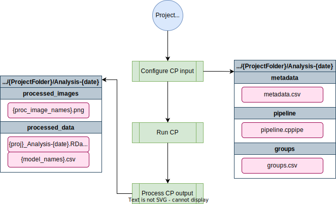

Andersen Lab Image Analysis Pipeline¶
Implemented using CellProfiler¶
The cellprofiler-nf pipeline performs worm position and stage identification using CellProfiler and process the output.
A Pipeline overview¶
C E L L P R O F I L E R - N F P I P E L I N E
parameters description Set/Default
========== =========== ========================
--project The path to your project directory Required
--pipeline The CP pipeline to use: toxin, dauer Required
--groups Comma separated metadata groupings "plate,well"
--outdir Output directory to place files "{projectdir}/Analysis-{date}"
--help This usage statement

Software requirements¶
- Nextflow v23+ (see the dry guide on Nextflow here or the Nextflow documentation here). On Rockfish, you can access this version by loading the
nf23_envconda environment prior to running the pipeline command:
module load python/anaconda
source activate /data/eande106/software/conda_envs/nf23_env
Relevant Docker Images¶
Note: Before 20220301, this pipeline was run using existing conda environments on QUEST. However, these have since been migrated to docker imgaes to allow for better control and reproducibility across platforms. If you need to access the conda version, you can always run an old commit with nextflow run andersenlab/cellprofiler-nf -r 20220216-Release
cellprofiler/cellprofiler(link): Docker image is maintained by the Broad Institute of MIT and Harvardandersenlab/r_packages(link): Docker image is created manually, code can be found in the dockerfile repo.
Make sure that you add the following code to your ~/.bash_profile. This line makes sure that any singularity images you download will go to a shared location on /vast/eande106 for other users to take advantage of (without them also having to download the same image).
# add singularity cache
export SINGULARITY_CACHEDIR='/vast/eande106/singularity/'
Note
If you need to work with the docker container, you will need to create an interactive session as singularity can't be run on Rockfish login nodes.
interact -n1 -pexpress
module load singularity
singularity shell [--bind local_dir:container_dir] /vast/eande106/singularity/<image_name>
Usage¶
Note: if you are having issues running Nextflow or need reminders, check out the Nextflow page.
Testing on Rockfish¶
This command uses a test dataset
nextflow run -latest andersenlab/cellprofiler-nf --debug
Running on Rockfish¶
You should run this in a screen or tmux session.
nextflow run -latest andersenlab/cellprofiler --pipeline dauer --project /vast/eande106/project/<user>/<project_dir>
Parameters¶
--project¶
The path to your project directory which must contain a directory named "raw_images" containing your images to analyze
--pipeline¶
The CP pipeline to use: toxin or dauer
--groups¶
Comma separated metadata groupings (default: "plate,well")
--outdir¶
Directory to store results in. (default:
CellProfiler Repository Data Directory Structure (input_data/ With Example Files)¶
input_data
├── batch_files
| └── 20191119_example_batch_20201018.h5
├── metadata
| └── 20191119_example_metadata_20201018.csv
├── pipelines
| ├── 20191119_example.cpproj
| └── sample_pipelines
├── projects
| └── 20191119_example
| ├── raw_images
| └── output_data
| └── 20191119_example_data_1603047856
| ├── CellProfiler-Analysis_20191119_example_data_1603047856run1
| ├── Logs
| ├── ProcessedImages
| ├── OverlappingWorms_Data
| └── NonOverlappingWorms_Data
├── scripts
| ├── generate_metadata.R
| ├── run_cellprofiler.sh
| ├── cellprofiler_parallel.sh
| ├── check_run_cellprofiler.sh
| └── aggregate_cellprofiler_results.R
├── well_masks
| └── wellmask_98.png
└── worm_models
├── Adult_N2_HB101_100w.xml
├── L1_N2_HB101_100w.xml
├── L2L3_N2_HB101_100w.xml
├── L4_N2_HB101_100w.xml
├── WM_FBZ_control.xml
├── WM_FBZ_dose.xml
└── high_dose_worm_model.xml
Input Directory Structure¶
dauer input¶
<project folder name>/
└── raw_images
├── 20191119-project-p01-m2x_A01_w1.tif
├── 20191119-project-p01-m2x_A02_w1.tif
└── ...
toxin input¶
<project folder name>/
└── raw_images
├── 20191119-project-p01-m2x_A01.tif
├── 20191119-project-p01-m2x_A02.tif
└── ...
Output Directory Structure¶
dauer output¶
<project folder name>/
├── raw_images
└── Analysis-{current date}
├── pipeline
├── metadata
├── groups
├── processed_data
| └── 20220501_dauerDebug_Analysis-{current date}.RData
└── processed_images
├── 20220501_dauerDebug-p002-m2X_A01_w1_overlay.png
├── 20220501_dauerDebug-p002-m2X_A01_w1_dauerMod_straightened_RFP.png
├── 20220501_dauerDebug-p002-m2X_A01_w1_nondauerMod_straightened_RFP.png
├── 20220501_dauerDebug-p002-m2X_A01_w2_dauerMod_NonOverlappingWorms_RFP_mask.png
├── 20220501_dauerDebug-p002-m2X_A01_w2_nondauerMod_NonOverlappingWorms_RFP_mask.png
└── ...
toxin output¶
<project folder name>/
├── raw_images
└── Analysis-{current date}
├── pipeline
├── metadata
├── groups
├── processed_data
| └── 20220501_toxinDebug_Analysis-{current date}.RData
└── processed_images
├── 20220501_dauerDebug-p002-m2X_A01_w1_overlay.png
└── ...
These data can be analyzed using the R/easyXpress package